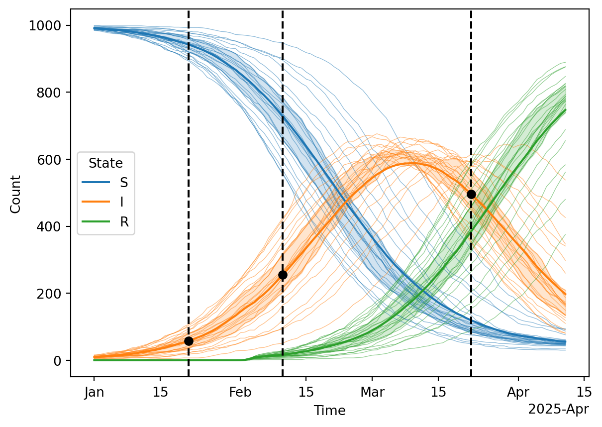
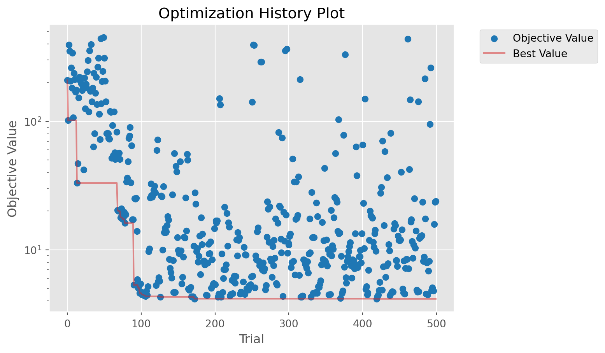
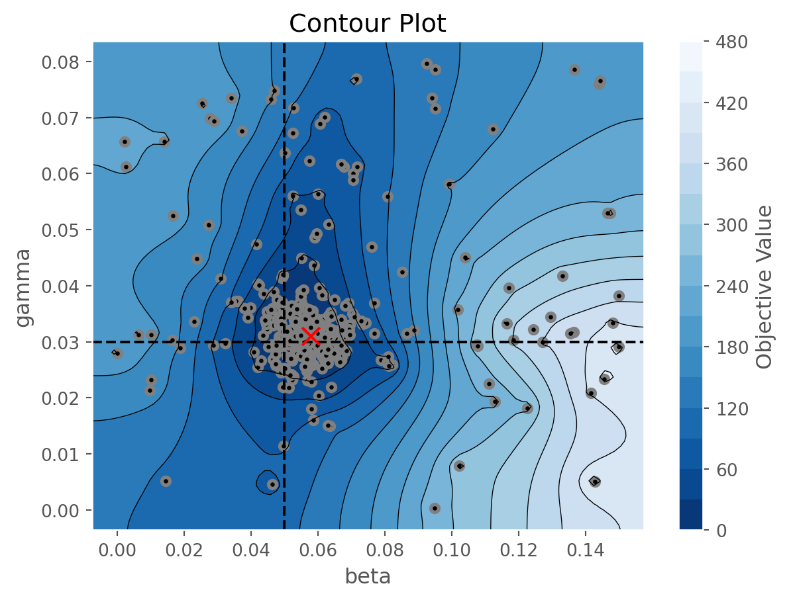
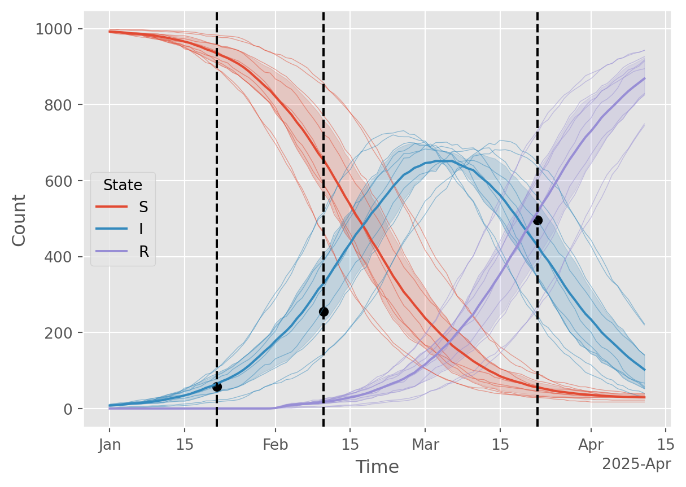
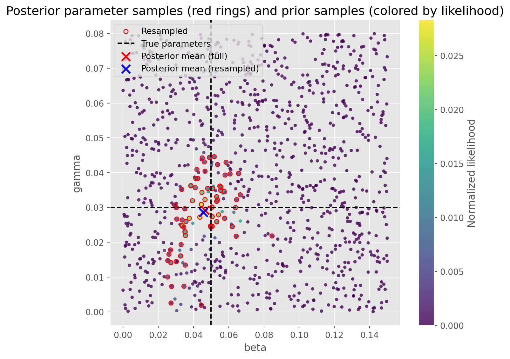
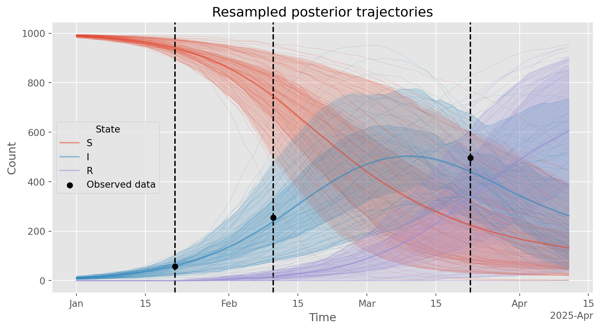

# Configure notebook autoreloading and inline plotting
%load_ext autoreload
%autoreload 2
%matplotlib inline
##%% Imports and settings
import optuna
optuna.logging.set_verbosity(optuna.logging.CRITICAL)
import starsim as ss
import numpy as np
import pandas as pd
import sciris as sc
import matplotlib.dates as mdates
import seaborn as sns
from IPython.display import display
import matplotlib.pyplot as plt
from scipy.special import betaln, gammaln
import warnings
warnings.simplefilter(action='ignore', category=FutureWarning)
warnings.filterwarnings('ignore', category=optuna.exceptions.ExperimentalWarning)Reidentify known parameters for a simple SIR model
The Starsim framework includes a built-in susceptible-infected-recovered (SIR) within-host progression module that can be used as a building block to developing more realistic agent-based models. Here, we use that SIR within-host module in combination with mixing pool transmission to create a simple SIR disease model.
Here, we use that SIR disease model to test two calibration workflows. The goal is to assess if they able to re-identify a known “true” set of parameters and explore the resulting latent trajectories. The two workflows demonstrated are: 1. Likelihood maximization using the optuna package as integrated with Starsim 2. Posterior sampling using a Bayesian workflow
Re-identifying the known parameter values from synthetic data provides reassurance that the calibration workflow is functioning as expected. For a more realistic Starsim calibration example, please see Calibration.
SIR model setup
First, we create a simple agent-based SIR simulation using Starsim.
def make_sim():
"""
Make a simple SIR simulation using Starsim.
Returns
-------
Sim
A single simulation that has been configured, but not initialized or run.
"""
sir_pars = dict(
init_prev = 0.01, # Initial prevalence
p_death = 0, # No deaths
)
sir = ss.SIR(pars=sir_pars)
net = ss.MixingPool(
beta = 1, # This is a multiplier on the disease beta
n_contacts = 2, # Poisson lambda
)
sim_pars = dict(
n_agents = 1000, # Number of agents in the simulation
dt = ss.days(1), # One-day time step
start = '2025-01-01', # Start date of the simulation
dur = 100, # Duration of the simulation
verbose = 0, # Level of detail printed to the console
)
sim = ss.Sim(pars=sim_pars, diseases=sir, networks=net)
return sim
def modify_sim(sim, calib_pars, rand_seed=0):
"""
Modify the given simulation with the calibration parameters and random seed.
Parameters
----------
sim : Sim
The simulation to modify.
calib_pars : dict
The calibration parameters to apply; note that the parameter values to use are stored in "value."
rand_seed : int
The random seed to use for the simulation.
Returns
-------
Sim
The modified simulation.
"""
# Explicitly look for each of the calibration parameters and set the appropriate values
if 'beta' in calib_pars:
β = ss.perday(calib_pars['beta']['value']) # Use per-day for the transmission rate
sim.pars.diseases.pars['beta'] = β
if 'gamma' in calib_pars:
γ = calib_pars['gamma']['value']
sim.pars.diseases.pars['dur_inf'].set(1/γ)
sim.pars['rand_seed'] = rand_seed
return sim
def run_starsim(pars, rand_seed=0):
"""
Run a Starsim SIR model with given parameters and random seed, returning results.
Parameters
----------
pars : dict
The parameters dictionary with Optuna a values stored in "value."
rand_seed : int
The random seed to use for the simulation.
Returns
-------
dataframe
The results of the SIR model with columns of S, I, and R and index of Time.
"""
# Make and modify the simulation
sim = make_sim()
sim = modify_sim(sim, pars, rand_seed)
sim.run() # Run the simulation
# Extract the results
results = pd.DataFrame(dict(
S = sim.results.sir.n_susceptible,
I = sim.results.sir.n_infected,
R = sim.results.sir.n_recovered,
), index=pd.Index(sim.results.timevec, name='Time'))
results['rand_seed'] = rand_seed # Store the random seed for later reference
return resultsCalibration setup
We will calibrate two parameters, beta and gamma, each allowed to take on values between 0 and 1.
# Define the calibration parameters in a simple dictionary
calib_pars = dict(
beta = {'low': 0, 'high': 0.15},
gamma = {'low': 0, 'high': 0.08},
)If using the optimization-based approach in Starsim, likelihood functions are defined and available for use. However, for the sampling-based approach, we will need to create our own likelihood.
def beta_binomial_likelihood(results, calib_data,
kappa = 10.0,
prior_alpha = 1.0,
prior_beta = 1.0
):
"""
Likelihood for Beta-Binomial observation model:
s_obs ~ BetaBinomial(n_obs, alpha=kappa*p_hat, beta=kappa*(1-p_hat))
p_hat is computed as (sim_x + prior_alpha) / (sim_n + prior_alpha + prior_beta).
Parameters
----------
results: DataFrame
The results of a simulation.
calib_data: DataFrame
The calibration data to compare against.
kappa: float
Concentration parameter: larger values imply less over-dispersion.
prior_alpha: float
Prior alpha used to smooth the estimate of p_hat.
prior_beta: float
Prior beta used to smooth the estimate of p_hat.
Returns
-------
float
The likelihood of the observed data given the simulation results.
"""
obs_x = calib_data['x'].values
obs_n = calib_data['n'].values
sim_x = results['I']
sim_n = results.sum(axis=1)
denom = np.maximum(sim_n + prior_alpha + prior_beta, 1e-12) # guard
p_hat = (sim_x + prior_alpha) / denom
p_hat = np.clip(p_hat, 1e-9, 1 - 1e-9)
alpha = kappa * p_hat
beta = kappa * (1.0 - p_hat)
# log binomial coefficient: log C(n, x)
logC = gammaln(obs_n + 1) - gammaln(obs_x + 1) - gammaln(obs_n - obs_x + 1)
loglik = logC + betaln(obs_x + alpha, obs_n - obs_x + beta) - betaln(alpha, beta)
return np.exp(np.sum(loglik)) # Exponentiated sum of logsBayesian calibration requires a prior distribution over the parameters. Here, we define a simple uniform prior over beta and gamma.
def sample_from_prior(size=1):
"""
Sample beta and gamma from a uniform prior.
Parameters
----------
size : int
Number of samples to draw.
Returns
-------
Pandas DataFrame
DataFrame of shape (size, 2) with columns [beta, gamma].
"""
beta = np.random.uniform(calib_pars['beta']['low'], calib_pars['beta']['high'], size)
gamma = np.random.uniform(calib_pars['gamma']['low'], calib_pars['gamma']['high'], size)
return pd.DataFrame({'beta': beta, 'gamma': gamma})Generate synthetic data for reidentification
That set the basic machinery of the SIR simulation model. Next, we’ll create some synthetic data to use as calibration targets. Because the model is stochastic, we’ll average over several replicates.
n_reps = 25 # Average over 25 repetitions to reduce stochastic noise
# These are the true parameters the optimizer will later try to identify
true_pars = dict(
beta = dict(value=0.05),
gamma = dict(value=0.03),
)
# Run the starsim SIR simulations in parallel.
# If you need to run in serial, for example when debugging, simply set serial=True
results_list = sc.parallelize(run_starsim, pars=true_pars, iterkwargs=dict(rand_seed=np.arange(n_reps)), serial=False)
results = pd.concat(results_list) # Combine the results into a single DataFrame
ave = results.groupby('Time').mean().drop(columns='rand_seed') # Average the results over the repetitions
# Extract synthetic data for calibration
observation_times = np.array([pd.Timestamp('2025-01-01')+pd.DateOffset(days=d) for d in [20, 40, 80]])
starsim_data = pd.DataFrame({
'x': ave.loc[observation_times, 'I'].astype(int),
'n': ave.loc[observation_times].sum(axis=1).astype(int),
'Prevalence': ave.loc[observation_times, 'I'] / ave.loc[observation_times].sum(axis=1)
}, index=pd.Index(observation_times, name='t'))
print('Here is the data extracted from the average simulation to be used during calibration:\n')
display(starsim_data)
# Plot the results, vertical dashed lines indicate the observation times where prevalence is measured
df = results.reset_index().melt(id_vars=['Time', 'rand_seed'], value_vars=['S', 'I', 'R'], var_name='State', value_name='Count')
ax = sns.lineplot(data=df, hue='State', x='Time', y='Count', units='rand_seed', estimator=None, alpha=0.5, lw=0.5, legend=False)
sns.lineplot(data=df, hue='State', x='Time', y='Count', errorbar=('pi', 50), ax=ax, legend=True)
ax.xaxis.set_major_formatter(mdates.ConciseDateFormatter(ax.xaxis.get_major_locator()))
for ot in observation_times:
ax.axvline(ot, ls='--', color='black')
ax.scatter(starsim_data.index, starsim_data['x'], marker='o', color='black', label='Observed data', zorder=10);Here is the data extracted from the average simulation to be used during calibration:
| x | n | Prevalence | |
|---|---|---|---|
| t | |||
| 2025-01-21 | 57 | 1000 | 0.05760 |
| 2025-02-10 | 255 | 1000 | 0.25508 |
| 2025-03-22 | 496 | 1000 | 0.49668 |

Likelihood maximization using the optuna package as integrated with Starsim
Starsim provides built-in integration with Optuna to make advanced model calibration easier. We demonstrate that linkage below using a Beta-binomial likelihood function.
sim = make_sim() # Begin by making a single "base" simulation with default parameters
# This example will use a single calibration component. We choose a
# Beta-binomial functional form to represent the "prevalence survey" data,
# taking advantage of both the numerator (x) and denominator (n) data.
prevalence_component = ss.BetaBinomial(
name = 'SIR Disease Prevalence',
# The starsim_data data has a date for each observation. The
# "step_containing" conform method will extract simulation results on the
# time step containing the observation date.
conform = 'step_containing',
# Here is the data we are trying to match, using the "x" and "n" columns
# from the starsim_data DataFrame.
expected = starsim_data[['x', 'n']],
# And here is how we will extract the relevant data from the simulation results
extract_fn = lambda sim: pd.DataFrame({
'x': sim.results.sir.n_infected, # Numerator
'n': sim.results.n_alive, # Denominator
}, index=pd.Index(sim.results.timevec, name='t')),
)
# Now make the calibration
calib = ss.Calibration(
sim = sim, # The base simulation
calib_pars = calib_pars, # The calibration parameters
build_fn = modify_sim, # The function to modify the base simulation with the calibration parameters
reseed = True, # Reseed the simulation for each calibration trial
components = [prevalence_component], # The calibration components
total_trials = 500, # Total number of trials to run
verbose = False, # Shh...
# Select and configure the sampler (optional)
sampler = optuna.samplers.TPESampler(n_startup_trials=50)
)
calib.calibrate() # Let's go!
# Print out a summary
sc.colorize(color='blue', string=f'The best parameters identified by the optimization are:\n\
* {calib.best_pars}\n\
These parameters should be close to the true parameters:\n\
* {true_pars}\n\
The best parameters resulted in a loss of {calib.study.best_value}.')The best parameters identified by the optimization are:
* {'beta': 0.05780958615383248, 'gamma': 0.03097592450163349, 'rand_seed': 431076}
These parameters should be close to the true parameters:
* {'beta': {'value': 0.05}, 'gamma': {'value': 0.03}}
The best parameters resulted in a loss of 4.145546948243417.
It seems like the best parameter values are pretty close to the right values, so that’s good. We can look at all the results and easily create a DataFrame containing the top K runs.
df = calib.to_df(top_k=10)
display(df)| value | datetime_start | datetime_complete | duration | params_beta | params_gamma | params_rand_seed | state | |
|---|---|---|---|---|---|---|---|---|
| number | ||||||||
| 269 | 4.145547 | 2026-02-04 09:41:42.598902 | 2026-02-04 09:41:42.866263 | 0 days 00:00:00.267361 | 0.057810 | 0.030976 | 431076 | COMPLETE |
| 267 | 4.303823 | 2026-02-04 09:41:42.598207 | 2026-02-04 09:41:42.861895 | 0 days 00:00:00.263688 | 0.056905 | 0.030848 | 425454 | COMPLETE |
| 320 | 4.434121 | 2026-02-04 09:41:43.891505 | 2026-02-04 09:41:44.681323 | 0 days 00:00:00.789818 | 0.055038 | 0.031691 | 697273 | COMPLETE |
| 395 | 4.443101 | 2026-02-04 09:41:45.844775 | 2026-02-04 09:41:46.200982 | 0 days 00:00:00.356207 | 0.055062 | 0.031829 | 615797 | COMPLETE |
| 329 | 4.457855 | 2026-02-04 09:41:44.205419 | 2026-02-04 09:41:44.871704 | 0 days 00:00:00.666285 | 0.055862 | 0.032099 | 688483 | COMPLETE |
| 393 | 4.469686 | 2026-02-04 09:41:45.780127 | 2026-02-04 09:41:46.240991 | 0 days 00:00:00.460864 | 0.054479 | 0.031658 | 738957 | COMPLETE |
| 385 | 4.469686 | 2026-02-04 09:41:45.597250 | 2026-02-04 09:41:46.077205 | 0 days 00:00:00.479955 | 0.054622 | 0.031540 | 622242 | COMPLETE |
| 388 | 4.470021 | 2026-02-04 09:41:45.663028 | 2026-02-04 09:41:46.121416 | 0 days 00:00:00.458388 | 0.054794 | 0.031541 | 782334 | COMPLETE |
| 389 | 4.472234 | 2026-02-04 09:41:45.140942 | 2026-02-04 09:41:46.168028 | 0 days 00:00:01.027086 | 0.054837 | 0.031233 | 810812 | COMPLETE |
| 399 | 4.472674 | 2026-02-04 09:41:45.905312 | 2026-02-04 09:41:46.167687 | 0 days 00:00:00.262375 | 0.054664 | 0.031717 | 618000 | COMPLETE |
# Plot the results
figs = calib.plot_optuna(['plot_optimization_history', 'plot_contour'])
figs[0].axes.set_yscale('log')
figs[1].axvline(true_pars['beta']['value'], ls='--', color='black')
figs[1].axhline(true_pars['gamma']['value'], ls='--', color='black')
figs[1].scatter(calib.study.best_params['beta'], calib.study.best_params['gamma'], 100, marker='x', color='red', zorder=10);

Finally, let’s run some simulations with the best parameters and compare to the calibration data. From a mathemtatical perspective, this is not the right thing to do. We have found the maximum-likelihood estimate (MLE) parameters, \(\theta\), and are now running simulations \(X \mid \theta\). These latent state trajectories represent the intrinsic noise in the model, but do not represent uncertainty. For that, additional methods are required or use a Bayesian approach, as illustrated below.
n_reps = 10 # Number of repetitions to run
# These are the best parameters found, the MLE estimate
best_pars = dict(
beta = dict(value=calib.study.best_params['beta']),
gamma = dict(value=calib.study.best_params['gamma']),
)
# Run the starsim SIR simulations in parallel, cool! If you need to run in
# serial, for example when debugging, simply set serial=True
results_list = sc.parallelize(run_starsim, pars=best_pars, iterkwargs=dict(rand_seed=np.arange(n_reps)), serial=False)
results = pd.concat(results_list) # Combine the results into a single DataFrame
# Plot the results, vertical dashed lines indicate the observation times where prevalence is measured
df = results.reset_index().melt(id_vars=['Time', 'rand_seed'], value_vars=['S', 'I', 'R'], var_name='State', value_name='Count')
ax = sns.lineplot(data=df, hue='State', x='Time', y='Count', units='rand_seed', estimator=None, alpha=0.5, lw=0.5, legend=False)
sns.lineplot(data=df, hue='State', x='Time', y='Count', errorbar=('pi', 50), ax=ax, legend=True)
ax.xaxis.set_major_formatter(mdates.ConciseDateFormatter(ax.xaxis.get_major_locator()))
for ot in observation_times:
ax.axvline(ot, ls='--', color='black')
ax.scatter(starsim_data.index, starsim_data['x'], marker='o', color='black', label='Observed data');
Bayesian calibration using sampling-importance resampling (SIR)
Now let’s use a Bayesian calibration approach to see if the results are any different. We’ll use a simple ABC rejection sampling with a beta-binomial likelihood. A key difference is that we’re learning a posterior distribution over both parameters and trajectories rather than just a point estimate of the parameters.
N = 1_000 # Number of prior samples (more is better, but slower)
# For Beta-Binomial, the concentration parameter. Lower kappa --> broader
# posterior and higher effective sample size (ESS) for the same N. But not a
# free parameter, kappa comes from the over-dispersion in the observed data.
kappa = 10
# Sample from the prior
prior_samples = sample_from_prior(size=N)
rand_seeds = np.random.randint(0, 1e6, size=2*N)
rand_seeds = np.unique(rand_seeds)[:N]
# Prepare parameter dicts for each sample
sample_pars_list = [
{
'pars': {'beta': {'value': row['beta']}, 'gamma': {'value': row['gamma']}},
'rand_seed': rand_seeds[idx] # Random seed for each simulation
}
for idx, row in prior_samples.iterrows()
]
# Run simulations in parallel and collect trajectories
sim_results_list = sc.parallelize(run_starsim, iterkwargs=sample_pars_list, serial=False)
# Store latent state trajectories for each sample
trajectories = pd.concat(sim_results_list) \
.reset_index() \
.set_index(['rand_seed', 'Time'])# Compute likelihoods for each sample
likelihoods = []
for rand_seed, sim_result in trajectories.groupby('rand_seed'):
sim_sir = sim_result.loc[rand_seed].loc[observation_times, ['S', 'I', 'R']]
likelihood = beta_binomial_likelihood(sim_sir, starsim_data, kappa=kappa)
likelihoods.append((rand_seed, likelihood))
results = pd.DataFrame(likelihoods, columns=['rand_seed', 'likelihood'])
results = pd.concat([prior_samples, results], axis=1).set_index('rand_seed')Within a Bayesian workflow, there are two ways to proceed from this point. 1. Use all samples, weighted by their likelihood. For this approach, there is no resampling step. 2. Resample \(K \leq N\) samples with probability proportional to their likelihood (with replacement). This is sampling-importance resampling (SIR), not to be confused with the susceptible-infected-recovered (SIR) model. Ideally, we would choose \(K=N\) resamples, but if using these samples for further analysis, it may be useful to choose \(K < N\) to reduce computational cost. It’s generally recommended to choose \(K\) as one to two times the effective sample size (ESS).
results['weight'] = results['likelihood'] / np.sum(results['likelihood'])
# Importance resampling
ESS = 1 / np.sum(results['weight']**2)
print('='*60)
print(f'Effective Sample Size (ESS) = {ESS:.1f} out of {N}')
if ESS < 30:
print('WARNING: ESS is below 30, consider increasing N')
print('='*60)
K = np.ceil(1.5 * ESS).astype(int) # Number of samples to draw
print('Resampling K =', K, 'samples from the weighted ensemble of N =', N, 'samples')
resample_seeds = np.random.choice(results.index, size=K, replace=True, p=results['weight'])
# Merge results into combined (all) and selected (K<N subset)
combined = trajectories.reset_index().merge(results, on='rand_seed').set_index(['rand_seed', 'Time'])
selected = combined.loc[resample_seeds]
# Show posterior samples as a DataFrame
posterior_pars = results.loc[resample_seeds, ['beta', 'gamma']]
display(posterior_pars.head())============================================================
Effective Sample Size (ESS) = 70.2 out of 1000
============================================================
Resampling K = 106 samples from the weighted ensemble of N = 1000 samples| beta | gamma | |
|---|---|---|
| rand_seed | ||
| 267033 | 0.050331 | 0.028919 |
| 98820 | 0.036188 | 0.023968 |
| 311503 | 0.048811 | 0.039865 |
| 53974 | 0.051945 | 0.030534 |
| 315673 | 0.054449 | 0.042884 |
Let’s look at the parameters, full (weighted) posterior mean, and posterior mean from the resample.
fig, ax = plt.subplots(figsize=(7, 6))
# Scatter all prior samples, colored by likelihood
scat = ax.scatter(
results['beta'], results['gamma'],
c=results['weight'], cmap='viridis', s=15, edgecolor='none', alpha=0.8
)
# Overlay red rings for the K resampled posterior samples
ax.scatter(
results.loc[resample_seeds, 'beta'], results.loc[resample_seeds, 'gamma'],
facecolors='none', edgecolors='red', s=25, linewidths=1, label='Resampled'
)
# Overlay the true parameter values and best posterior sample
ax.axvline(true_pars['beta']['value'], ls='--', color='black', label='True parameters')
ax.axhline(true_pars['gamma']['value'], ls='--', color='black')
# Mark the full and resampled posterior means
full_posterior_mean = np.average(results[['beta', 'gamma']], weights=results['weight'], axis=0)
ax.scatter(full_posterior_mean[0], full_posterior_mean[1], 100, marker='x', color='red', lw=2, zorder=10, label='Posterior mean (full)')
posterior_mean = results.loc[resample_seeds, ['beta', 'gamma']].mean(axis=0)
ax.scatter(posterior_mean[0], posterior_mean[1], 100, marker='x', color='blue', lw=2, zorder=11, label='Posterior mean (resampled)')
ax.set_xlabel('beta')
ax.set_ylabel('gamma')
ax.set_title('Posterior parameter samples (red rings) and prior samples (colored by likelihood)')
plt.colorbar(scat, ax=ax, label='Normalized likelihood')
# Move the legend outside the figure to the right
plt.legend()
plt.tight_layout()
plt.show()
View latent trajectories based on all \(N\) samples, weighted by their likelihood. Takes some code to incorporate the weights into the plotting…
# Use ALL samples, with weights, to compute mean and quantiles
df = combined \
.reset_index() \
.melt(
id_vars=['Time', 'rand_seed'],
value_vars=['S', 'I', 'R'],
var_name='State',
value_name='Count'
)
df['Weight'] = df['rand_seed'].map(results['weight']) # Add weights to the DataFrame
def weighted_quantile(values, quantiles, weights):
v = np.asarray(values, float)
q = np.atleast_1d(quantiles).astype(float)
w = np.asarray(weights, float)
order = np.argsort(v)
v, w = v[order], w[order]
cw = np.cumsum(w)
cw /= cw[-1] if cw[-1] > 0 else 1.0
return np.interp(q, cw, v)
def summarize(group):
vals = group['Count'].to_numpy()
wts = group['Weight'].to_numpy()
mean = np.average(vals, weights=wts)
q05, q25, q75, q95 = weighted_quantile(vals, [0.05, 0.25, 0.75, 0.95], wts)
return pd.Series({'mean': mean, 'q05': q05, 'q25': q25, 'q75': q75, 'q95': q95})
summary = (
df.groupby(['Time','State'], sort=True, as_index=False)
.apply(summarize)
.reset_index(drop=True)
)
fig, ax = plt.subplots(figsize=(9,5))
lines = sns.lineplot(data=summary, x='Time', y='mean', hue='State', hue_order=['S', 'I', 'R'],
estimator=None, errorbar=None, ax=ax, zorder=5)
# Get the colors used by seaborn for each state
state_colors = {line.get_label(): line.get_color() for line in ax.lines}
for state, g in summary.groupby('State'):
color = state_colors.get(state, None)
ax.fill_between(g['Time'], g['q05'], g['q95'], alpha=0.12, linewidth=0, color=color) # 90% band
ax.fill_between(g['Time'], g['q25'], g['q75'], alpha=0.25, linewidth=0, color=color) # 50% band
for ot in observation_times:
ax.axvline(ot, ls='--', color='black')
ax.scatter(starsim_data.index, starsim_data['x'], marker='o', color='black', label='Observed data', zorder=10);
ax.set_ylabel('Count')
ax.set_title('Weighted posterior trajectories')
ax.legend(title='State')
ax.xaxis.set_major_formatter(mdates.ConciseDateFormatter(ax.xaxis.get_major_locator()))
plt.tight_layout()/tmp/ipykernel_1377252/3953845967.py:31: DeprecationWarning: DataFrameGroupBy.apply operated on the grouping columns. This behavior is deprecated, and in a future version of pandas the grouping columns will be excluded from the operation. Either pass `include_groups=False` to exclude the groupings or explicitly select the grouping columns after groupby to silence this warning.
.apply(summarize)
# Plot the resampled trajectories. Should be similar to the weighted posterior over latent trajectories shown above.
df = selected \
.reset_index() \
.melt(
id_vars=['Time', 'rand_seed'],
value_vars=['S', 'I', 'R'],
var_name='State',
value_name='Count'
)
fig, ax = plt.subplots(figsize=(9,5))
sns.lineplot(data=df, hue='State', x='Time', y='Count', units='rand_seed', estimator=None, alpha=0.5, lw=0.2, legend=False, ax=ax)
sns.lineplot(data=df, hue='State', x='Time', y='Count', errorbar=('pi', 50), alpha=0.5, ax=ax, legend=True, zorder=5)
sns.lineplot(data=df, hue='State', x='Time', y='Count', errorbar=('pi', 90), alpha=0.25, ax=ax, legend=False, zorder=6)
ax.xaxis.set_major_formatter(mdates.ConciseDateFormatter(ax.xaxis.get_major_locator()))
for ot in observation_times:
ax.axvline(ot, ls='--', color='black')
ax.scatter(starsim_data.index, starsim_data['x'], marker='o', color='black', label='Observed data', zorder=10);
ax.legend(title='State')
ax.set_title('Resampled posterior trajectories')
plt.tight_layout()
The next step would be scenario analysis using these \(K\) resamples parameters and latent trajectories. Each of these \(K\) samples represents a different possible future trajectory of the epidemic, and the ensemble of these \(K\) trajectories can be used to quantify uncertainty in future projections. Each of these \(K\) trajectories should be simulated forward \(M\) times for each scenario, using common random numbers, to produce final results.